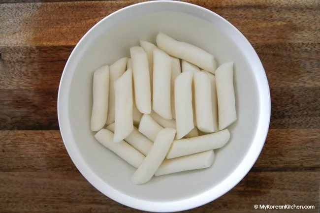
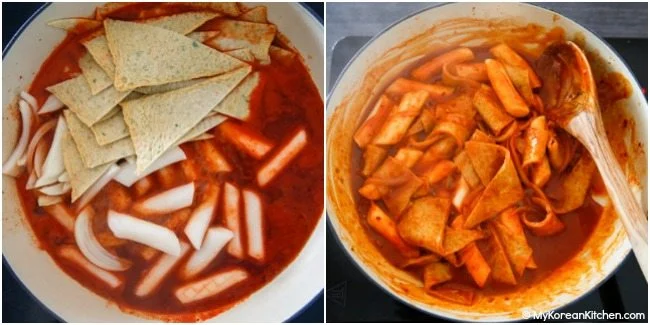

Let's make Tteokbokki!
What is tteokbokki?
Tteokbokki is one of Korean traditional foods.
In Korea, it is very common and popular food.
Let's enjoy Tteokbokki together!
What we have to prepare?
To make Tteokbokki, you need some ingredients.
main ingredients
- 350g / 12 ounces Koreanrice cakes, separated
- 150g / 5.3 ounces Korean fish cakes, rinsed over hot water & cut into bite size pieces
- 2cups Korean soup stock (dried kelp anddried anchovy stock)
- 60g / 2 ounces onion, thinly sliced
- 1 Tbsp gochujang 1
sauce
- 1 Tbsp soy sauce
- 1 1/2 Tbsp raw sugar
- 1 tsp minced garlic
- 1 tsp gochugaru (Korean chili flakes)
Ganish
- 1 tsp roasted sesame seeds
- 1 tsp sesame oil
- 1 stalk green onion, finely chopped
*1 Tbsp = 15 ml, 1 Cup = 250 ml
Directions
1. Unless your rice cakes are soft already, soak them in warm water for 10 mins.
Soak rice cakes in water 
2. Boil the soup stock in a shallow pot over medium high heat and dissolve the tteokbokki sauce
by stirring it with a spatula.

Once the seasoned stock is boiling, add the rice cakes, fish cakes and onion.
Boil them a further 3 to 5 mins until the rice cakes are fully cooked.
Then, to thicken the sauce and to deepen the flavor, simmer it over low heat for a further 2 to 4 mins.
3. Add the sesame oil, sesame seeds, and green onion then quickly stir. Serve warm.